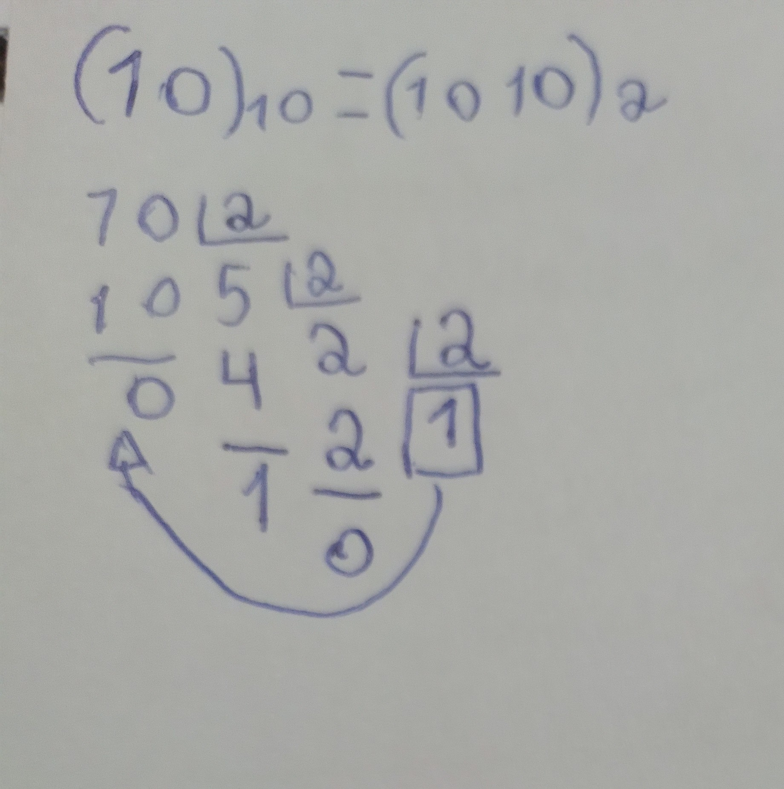
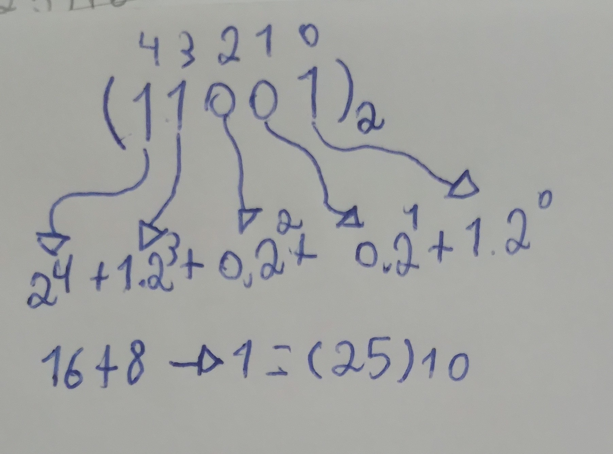
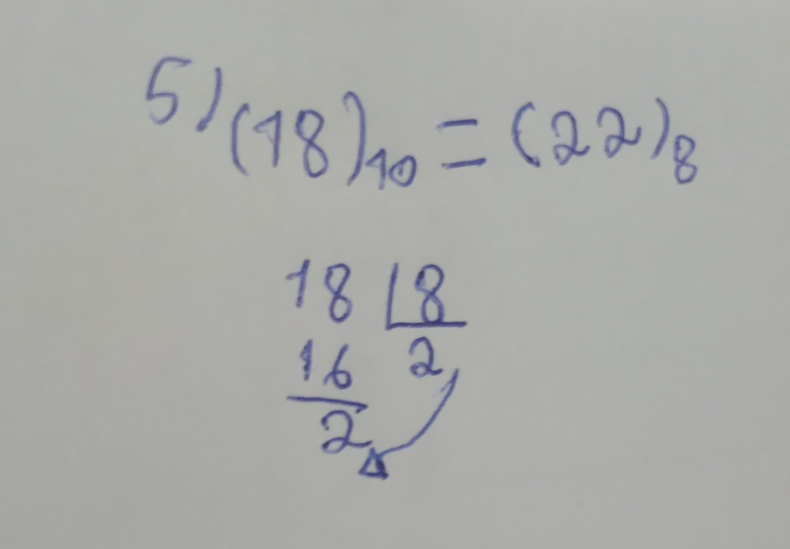
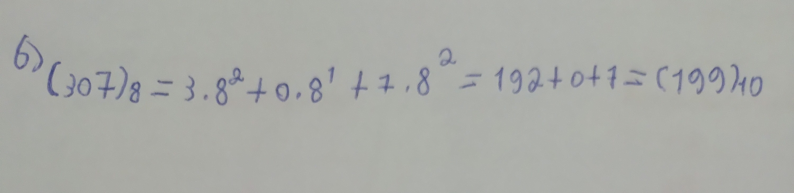
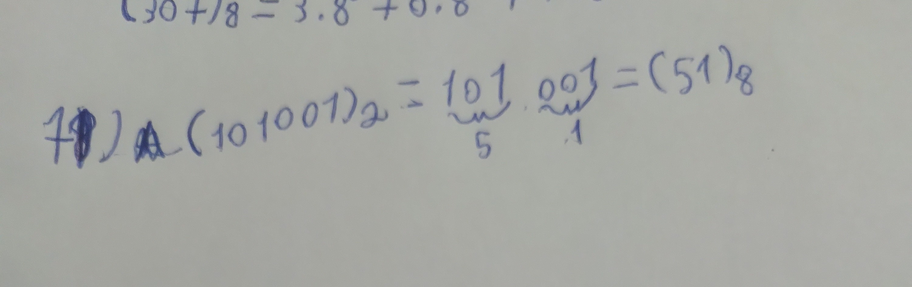
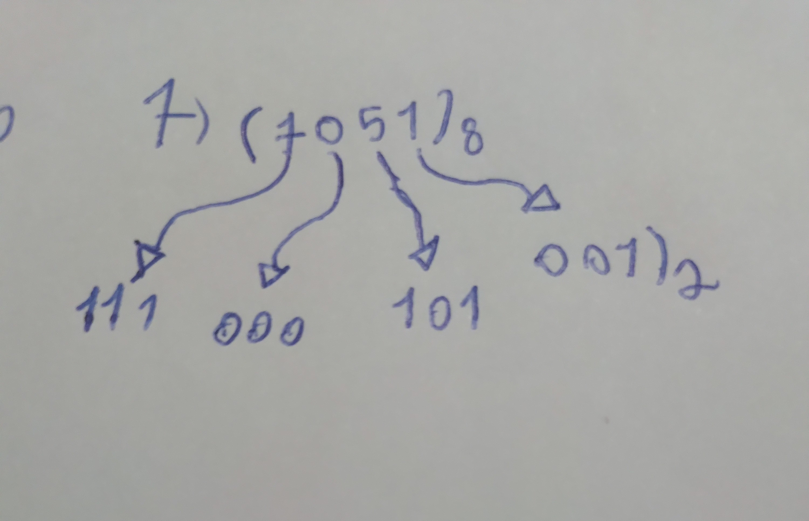
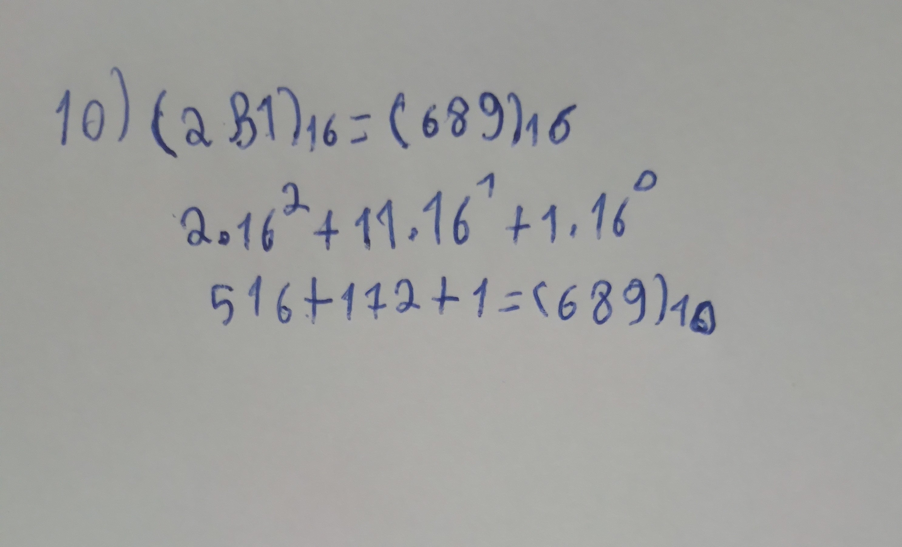
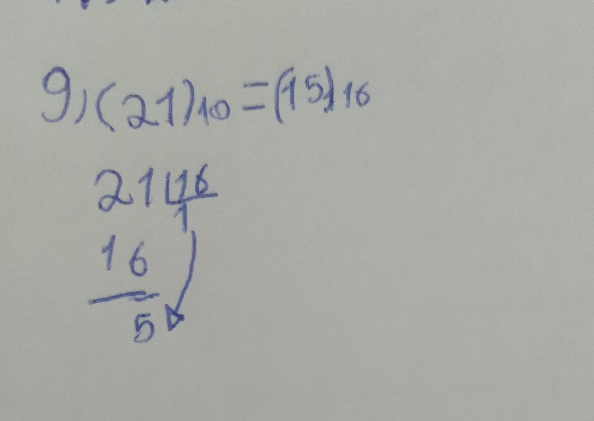
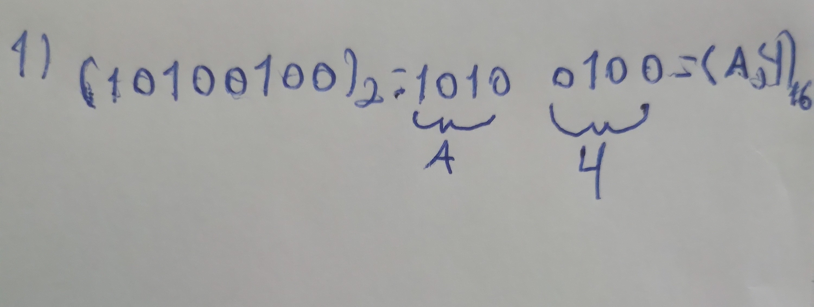
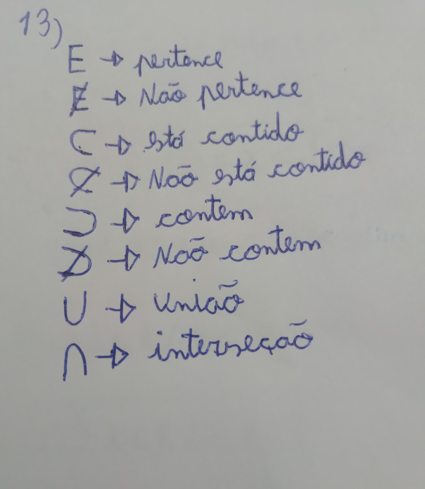

Os sistemas de numeração eu tive algumas dificuldades em aprender, por ter perdido algumas explicações eu usei os slides para estudar e peguei alguns exercícios no Google e nos conjuntos eu tive um pouco de facilidade por ter estudado no ano passado.
O meu comprometimento no primeiro trimestre não foi muito bom.
Aqui estão os conteúdos matemáticas que eu estudei e o meu entendimento sobre eles.
sistema de numeração:
sistema de numeração é um conjunto de regras e símbolos usados para representar números.
Existem vários sistemas de numeração.
O sistema decimal, o binário, o octal e o hexadecimal.
SISTEMA DECIMAL:
O sistema de numeração decimal, usa
o número 10 para todas as operações matemáticas.
SISTEMA BINÁRIO:
O sistema de base 2 ou Binário, representa a base de dois números, zero e um.
|
Decimal |
Binário |
| 0 |
0 |
| 1 |
1 |
| 2 |
10 |
| 3 |
11 |
| 4 |
100 |
| 5 |
101 |
| 6 |
110 |
| 7 |
111 |
Conversão:Base 10 para Base 2

Conversão: Base 2 para Base 10

Sistema Octal:
Esse sistema de base 8,os algoritimos vão de 0 a 7.
|
Decimal |
Octal |
| 0 |
0 |
| 1 |
1 |
| 2 |
2 |
| 3 |
3 |
| 4 |
4 |
| 5 |
5 |
| 6 |
6 |
| 7 |
7 |
| 8 |
10 |
| 9 |
11 |
| 10 |
12 |
| 11 |
13 |
Conversão:Base 10 para Base 8

Conversão:Base 8 para Base 10

Corversão:Base 2 para base 8

Conversão:Base 8 para Base 2

Sistema Hexadecimal:
Hexadecimal e o sistema numérico de base 16, utilizando 0 a 9 e as letras de A a f
|
Decimal |
Hexadecimal |
| 0 |
0 |
| 1 |
1 |
| 2 |
2 |
| 3 |
3 |
| 4 |
4 |
| 5 |
5 |
| 6 |
6 |
| 7 |
7 |
| 8 |
8 |
| 9 |
9 |
| 10 |
A |
| 11 |
B |
| 12 |
C |
| 13 |
D |
| 14 |
E |
| 15 |
F |
Conversão:Base 16 para base 10

Conversão:Base 10 para base 16

Conversão:Base 2 para Base 16

Noção de conjuntos:
A noção de conjunto, é um conjunto de uma coleção de qualquer coisa.
Conjunto numérico:
É formado pelos números naturais, inteiros, racionais, irracionais e reais
Naturais { 1,2,3,4,5,6,7 }
Inteiros { -4,-3,-2,-1,0,1,2,3,4 }
Racionais {Frações, dízima periódica, inteiros e naturais}
Irracionais {dízimas não periódicas e raízes não exatas}
Conjuntos:

Conjunto vazio:
{} ou ø
Diferença
A={5,6,7,8}
B={4,5,6,7,8,9}
A-B={4,9}
Intervalos reais:
São conjunto de números reais que estão contidos dentro de uma faixa de valor
Um intervalo fechado é um intervalo que inclui seus limites.
Fechado
[ ] < >
Um intervalo aberto é um intervalo que não inclui seus limites.
aberto
( ) > < ] [
intervalos semi abertos (ou semi-fechados), que incluem um dos limites
Fechado aberto
[ ] < > ( ) > < ] [